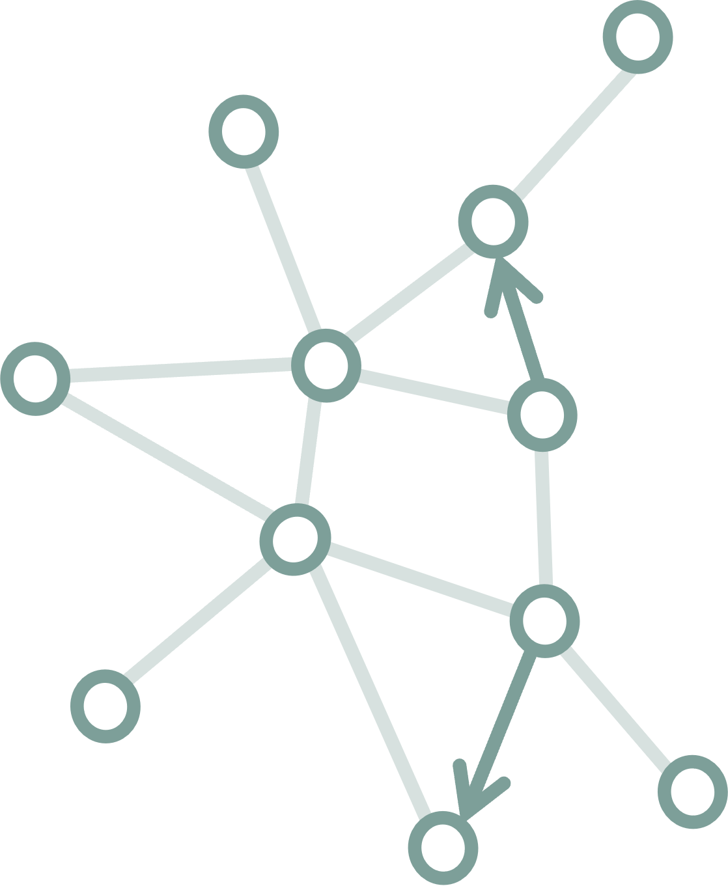
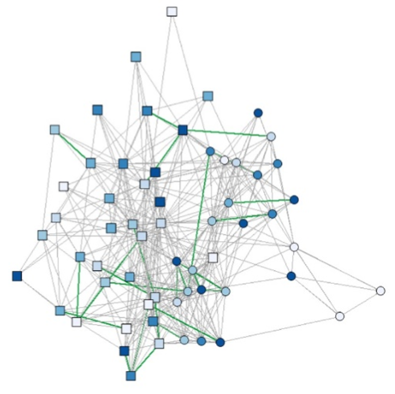
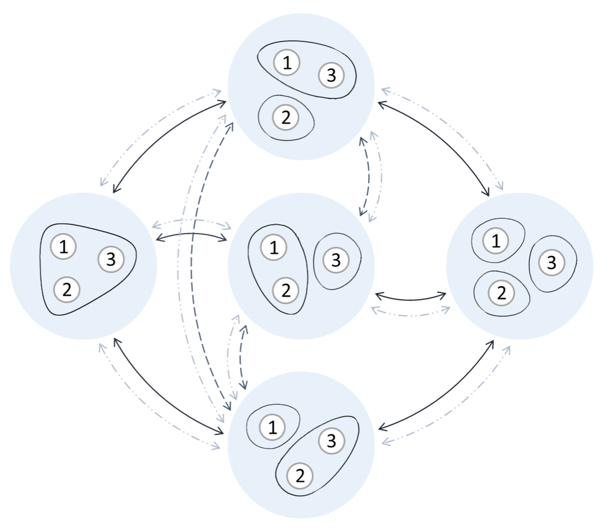
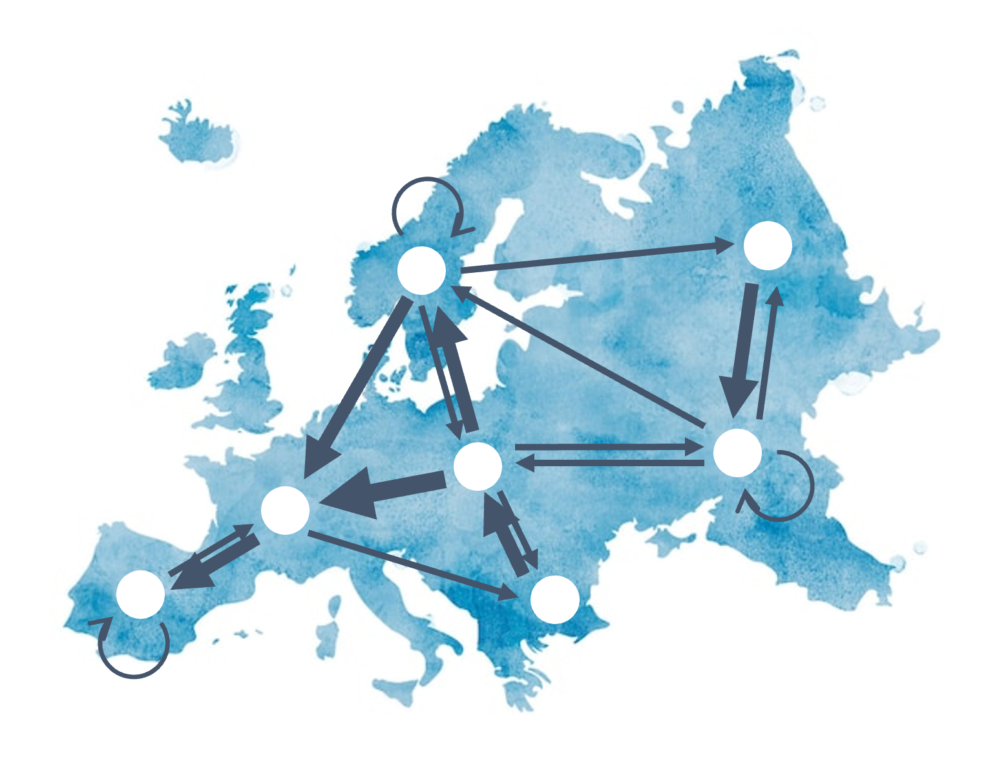
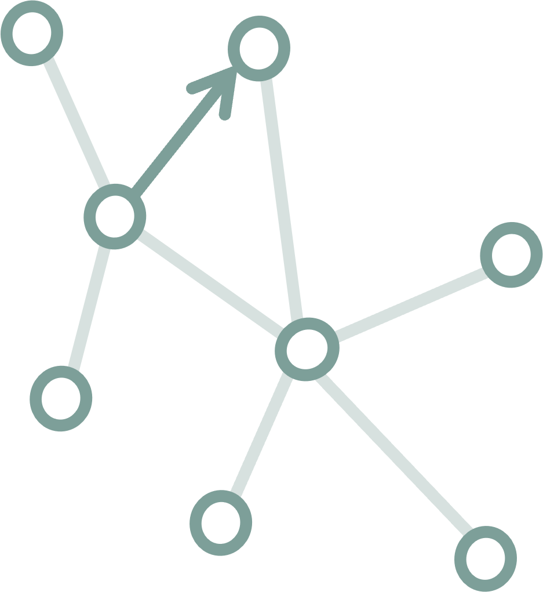
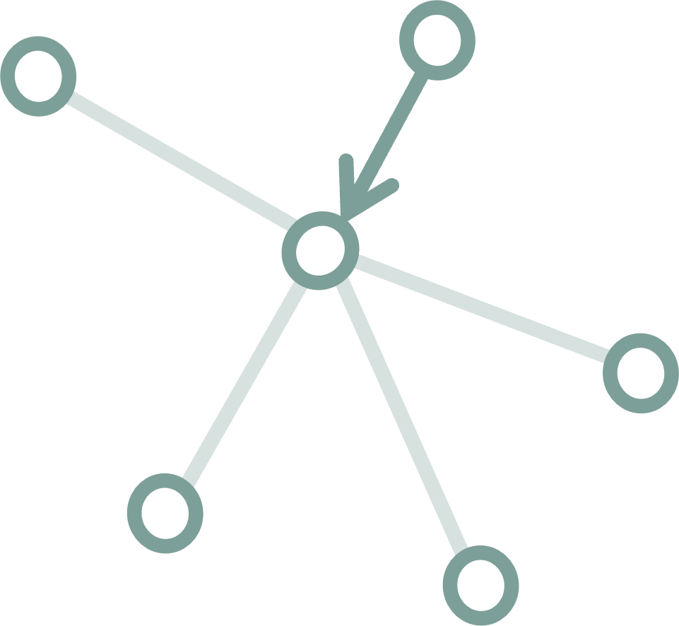

Mathematical Sociologist
Social networks and network statistical models
Research Fellow | Institute for Advanced Study in Toulouse, Toulouse School of Economics 🇫🇷 (IAST)
Postdoctoral Researcher | Department of Sociology, University of Zurich 🇨🇭 (UZH)

My research aims at furthering statistical methods for the analysis of social networks. I focus on the development of relational event models, exponential family models for social group data, and models for mobility networks. In my work, I use concepts from many different disciplines: sociology, statistics, psychology, economics, biology…
I have been working on several empirical studies using this type of methods, to understand: socioeconomic segregation, the link between depressive symptoms, the coordination of states at the UN General Assembly, the social dynamics in an elite organization in France…
Besides work, I try to live a life with a minimal impact on the environment. I love climbing, playing volleyball, watching rugby, doing pottery, and enjoying our beautiful nature.
|
 |
|
 |
|
 Understanding mobility networksMobility between jobs, occupations, or countries is a crucial topic in sociological research. In many types of mobility, individuals’ moves between states or locations are endogenous. Because of this endogeneity, mobility has increasingly been represented as a network, where nodes represent jobs, occupations, or geographical locations, and edges represent the flows of individuals between those. What determines the structure of these networks? I am working on developing a novel statistical framework proposed by Per Block for the analysis of mobility networks. The goal of this model is to test endogenous mechanisms explaining mobility flows, such as bandwagon effects. The model can already be used using the R package MoNAn. |

2022 - present | Postdoctoral Researcher Department of Sociology, University of Zurich
2021 - present | Research Fellow Institute for Advanced Study in Toulouse, University of Toulouse 1 Capitole
2016 - 2021 | PhD Social Networks Lab, ETH Zurich
2015 - 2016 | MSc Network Industries and Digital Economics, Paris-Saclay University
2012 - 2016 | MSc Science and Engineering, Supélec (now CentraleSupélec)
2023 - present | Graph Analysis (lecturer and coordinator) at the Toulouse School of Economics
2022 - present | Guest lecturer for courses on Relational Event Models and Exponential Random Graph Models at the Geneva Graduate Insitute and at the University of Salerno
2020 | Network Modeling (teaching assistant) at ETH Zürich
2017 - present | Teaching workshops for the R packages Goldfish and RSiena
|
The
role of selection in socioeconomic homophily: Evidence from an
adolescent summer camp Modeling
partitions of individuals Social
network-based distancing strategies to flatten the COVID-19 curve in a
post-lockdown world A
model for the dynamics of face-to-face interactions in social
groups |

If you want to get in touch, you can reach me at: marion.hoffman@iast.fr or hoffman@soziologie.uzh.ch